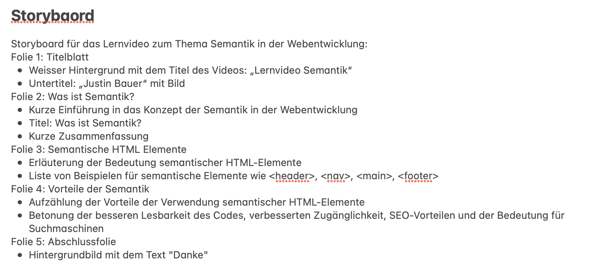

Kurze Zusammenfassung
Die Semantik in der Webentwicklung bezieht sich auf die Bedeutung und Strukturierung von HTML-Elementen, um den Inhalt einer Webseite besser zu verstehen und interpretieren zu können. Durch die Verwendung semantischer HTML-Tags wie <header>, <nav>, <main>, <article>, <section> und <footer> kann man den Zweck und die Funktion einzelner Abschnitte einer Webseite klarer definieren.
Diese semantische Strukturierung erleichtert nicht nur Suchmaschinen das Indexieren und Verstehen des Inhalts, sondern auch Entwicklern, indem sie eine konsistente und leicht wartbare Codebasis ermöglicht. In diesem Lernvideo werden die Grundlagen der Semantik in der Webentwicklung erläutert und praktische Beispiele gezeigt, um das Verständnis und die Anwendung dieser Konzepte zu fördern.
Storyboard
Das Vorgehen
Thema festlegen: Ich wähle ein klares und passendes Thema für mein Lernvideo im M152 aus.
Inhalte planen: Ich erstelle eine geordnete Liste der Hauptpunkte.
Storyboard erstellen: Ich skizziere das Storyboard, um den Ablauf und die wichtigsten Szenen meines Videos darzustellen.
Skript verfassen: Basierend auf dem Storyboard schreibe ich ein präzises Skript, das den Inhalt klar und verständlich erklärt.
Audioaufnahmen vorbereiten: Ich bereite die benötigten Materialien vor und sorge für eine hochwertige Aufnahmequalität.
Powerpoint vorbereiten: Ich folge dem Storyboard und Skript, um das Lernvideo aufzunehmen und achte auf eine gute visuelle Darstellung.
Video bearbeiten: Ich nutze Videobearbeitungssoftware, um das aufgenommene Material zu schneiden, Übergänge hinzuzufügen und das Video visuell ansprechender zu gestalten.
Finale Überarbeitung: Ich überprüfe die Tonqualität, visuellen Effekte und die Gesamtdarstellung des Videos und nehme gegebenenfalls Anpassungen vor.
Veröffentlichen und teilen: Ich speichere das fertige Video in einem geeigneten Format ab und teile es mit meiner Zielgruppe.
Justin Bauer

Dieses Werk ist lizenziert unter einer Creative Commons Namensnennung - Weitergabe unter gleichen Bedingungen 4.0 International Lizenz.